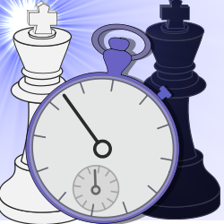

| 
Chess Clock for Maemo |
| Home
| Api Documentation |
Project page |
Chess Clock is game clock software for chess players with N900. Software supports different time controls (Fischer,
Fischer after, Bronstein delay, Simple delay, Hour class). Timers are
adjustable, difference time settings for white and black is available. Touch control to end the turn. Software is under construction. First version will be released during August 2010. Pre-released source is available thought git reposity on Garage project page, |
|
© Arto Hyvättinen 2010. Chess Clock is free software under GNU
General Public License 3. |